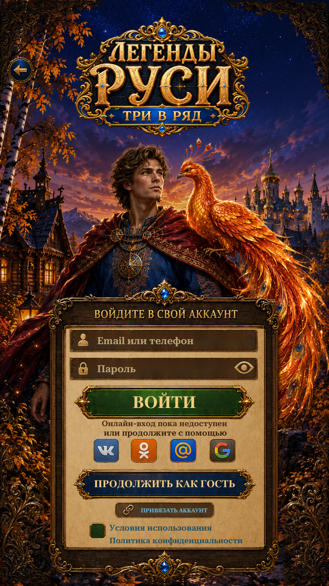

Visual Page 30 · Login / Account
Repaired the visible scenery strips around the form and restored its complete top crest. The source cloak and Firebird now meet the panel’s curved outline. Layout and account behavior are unchanged.
Implementation and checks · Changed-file audit · Asset provenance · Transparency checks

Actual Unity Play Mode · 941×1672 · Russian · isolated test save.Six targeted Unity checks passed. Seven final Login captures. Existing Scenario isolation reused; no new API calls or credits.
Scenery, live typography and repaired textures differ from the original. Credentials are not sent or saved; legal acceptance is not recorded. No APK or physical-phone verification.